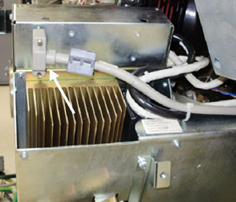
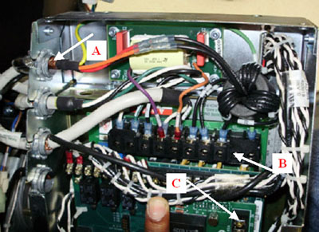
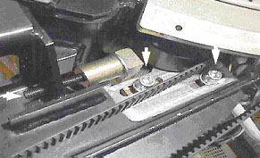
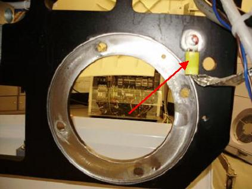
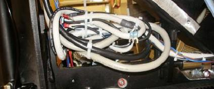

Operating Documentation
Direction 5193574-800, Rev# 22
Module Version 1.0, Version Date 5/17/10
Operating Documentation |
| ||||
| electrocution hazard | ||||
| voltages present in gantry | ||||
| Use proper lockout/tagout procedures from the safety section of the service documentation when stated during procedure. this procedure includes work directly in the gantry power pan. |
| ||||
| blood-borne pathogens may be present | ||||
| unprotected contact with blood-borne pathogens may cause disease transmission. | ||||
| use proper procedures and ppe to avoid blood-borne pathogens. |
| ||||
| Follow ALL required safety and PPE procedures when working on this product. | ||||
| Condition | Reference | Effectivity |
|---|---|---|
Only trained service personnel should service the GE CT Scanner. | - | - |
| ||||
| This procedure uses many screw, lock and flat washer combinations. Make sure the order of installation has the lock washer positioned between the flat washer and head of the screw. | ||||
Remove gantry right side cover and disable Axial drive, HVDC and 120VAC service switches from the service switch panel.
Perform all required LOTO activities to remove all power from the gantry.
Remove the gantry left side, top, front and rear covers. Connect the cover E-stop circuit to the terminators on the gantry.
Remove right and rear base covers.
| ||||
| Be careful when removing the slip ring cover. You may need to loosen the tilting base cover to aid in removal of the slip ring cover. Slip Ring transmitter ring damage could occur if the cover is scraped on the ring surface. | ||||
Remove the lower slip ring cover by loosening the captive screws.
Remove the front right screw and two rear middle screws of the gantry tilting bottom cover to allow removal of the drive pulley cover.
Remove the right side tilting safety cover panel with a 5mm hex wrench for easier access to the drive module.
Position gantry such that the tube is at the 6-7 o'clock position (tube at bottom of gantry) so that there are minimal obstructions from the hoist setup to the drive/motor assembly position. The chain of the hoist will then rest against the balance weight stack and not hit other components during use.
Engage the rotating assembly indexer lock to prevent gantry rotation during this procedure.
Disconnect the control cable from the backside of the Axial Drive Module (ADM) assembly. Refer to Illustration 3.
Illustration 3: Axial Drive Module Rear View

Remove the ADM front cover by loosening the two (2) thumb screws and sliding the cover up and off the drive module.
Disconnect the 3-phase VAC power connections at TB1 R, S, T, Grnd. See Illustration 4 for this and subsequent steps for terminal block locations.
Illustration 4: Cable Connections

| Illustration 4 Key | |
| A | Cable bulkhead clamp with locknut |
| B | TB1 |
| C | TB3 |
Disconnect the axial dynamic brake cable connections at TB1 DC+, DC- and TB3 24, 25.
Using a flat head screwdriver, carefully loosen and fully remove the lock nuts from the dynamic brake line and power line cable bulkhead clamps (first and third from the top), 2 total. Reference Illustration 4.
With lock nuts removed from the bulkhead clamp, reach out of the sheet metal side and pull the cable up through the slots such that the cables are now free from the drive module housing. Carefully cut and remove cable ties as needed.
Disconnect the transformer 120V 2 PIN molex and DC molex connections on the dynamic brake. These will no longer be used with the installation of the new axial drive. Refer to Illustration 5.
Illustration 5: Axial Holding Brake Assembly

| Illustration 5 Key | |
| A | Collar |
| B | Mount bolts |
| C | Molex connections |
| D | Brake Assembly |
Disconnect the molex connection at the holding brake relay (blue and brown) between the drive module and the axial motor.
Remove the drive gear cover by removing the two or three M6 hex screws, flat washers and lock washers with a 5mm hex wrench. Refer to Illustration 6.
Illustration 6: Gear Cover

Loosen the axial drive belt using the two steps below. Refer to Illustration 7.
Using a 10 mm hex key, or hex bit socket, loosen the two (2) mounting screws on the belt tension plate.
Using a 6 mm hex key, or hex bit socket with a 12 inch extension, fully loosen the elongated hex screw to loosen the drive belt.
Illustration 7: Threaded Rod and Two Mounting Screws

Remove the drive belt from the drive gear. Take care to not disturb the teeth engagement along the rotating assembly.
Remove ground braid from frame with a 5mm hex wrench and discard . Refer to Illustration 8.
Illustration 8: Ground Braid to be Removed and Discarded

Assemble the gantry tube hoist frame and install hoist. Use a strap on the hoist wrapped around the drive assembly to support the motor.
| ||||
| heavy object | ||||
| motor assembly is in an awkward location while removing/installing. Motor assembly can shift when removing mounting hardware. | ||||
| Make sure the motor is supported with a hoist. |
Using a 7/32 inch hex bit socket, remove the four (4) hex screws mounting the motor to the gantry frame. Refer to Illustration 10.
| ||||
| Heavy Object | ||||
| Motor is heavy | ||||
| Exercise care when replacing the motor. Make certain to support the motor with a hoist. |
Guide the motor assembly out of the gantry and set aside. Leave the hoist assembly set up as it will be required for the installation of the new drive.
Remove lower Cantrell (latch) bracket from the assembly. You will need to reuse this bracket on the new assembly on installation. Refer to Illustration 11.
Illustration 11: Safety Cover Bracket and Lower Cantrell to be Reused

| Illustration 11 Key | |
| A | Lower Cantrell bracketremoved from this bracket and installed on new drive |
Pull all remaining cables through the back of the gantry frame for installation.
For installation procedure, refer to 2010 Axial Drive Assembly Replacement, Section 4.3 and 4.4.
For additional routing, bundle excess cabling in the back of the frame and connect to frame with cable ties.
Do the same with entire brake cable that was removed from the dynamic brake. Refer to Illustration 12.
Illustration 12: Bundling Excess Cabling

Replace tilting bottom cover and tilting gantry safety cover.
Remove LOTO to restore system power.
Turn on the 120VAC service switch from the service switch panel.
When power is turned to ON, a code “o2” should display on the axial drive window. Refer to Illustration 13.
Turn off the 120VAC service switch from the service switch panel.
Install the right side tilting gantry cover.
Disengage the rotating assembly lock and replace the bottom cover and lower slipring cover.
Install the gantry front and rear covers, scan window, top and left side covers.
Turn on the 120VAC, axial drive and HVDC service switches from the service switch panel.
Install the gantry right side cover.
Perform a Fastcal from the [Daily Prep] button of the scan display.
Run the System Scanning Test from the Functional Checks procedure list.
Plug in any options the customer has to the interface panels as applicable for your site. Perform any defined functional checks for the options plugged into the interface panels.